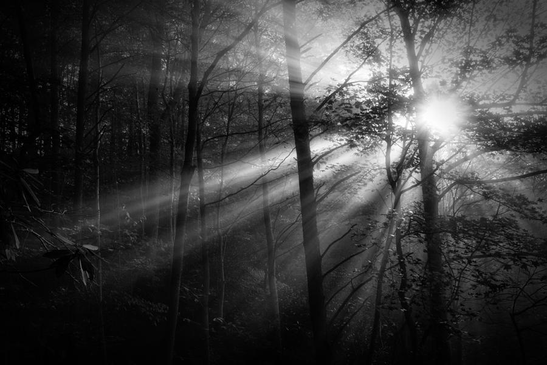

Exploring

You fumble around as you try to make sense of your surroundings. Your vision severly diminished. The ground is uneven and cold.
You managed to walk a few feet before tripping over what seems to be a root. You look upwards from the ground and can see the tiniest specks of light shimmering through the abyss that surrounds you.
You squint at the sight and try your hardest to focus your eyes. The lights begin to shimmer more rapidly as a soft breeze caresses your face. It dawns on you.
It's a forest... I'm in a forest... a very dark one...
You move around the tree you just fell over. Inspecting every inch. You find a small box hidden away at the base.
What Shall You Do?